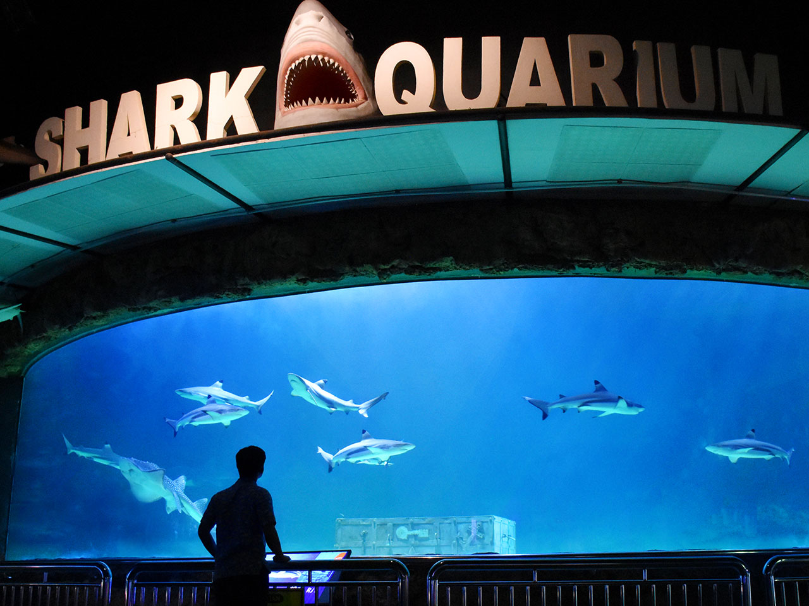

SEA WORLD ANCOL
Dibuat oleh Agnes Putri Afdzilla

{kind=link}
Sea World Ancol merupakan sebuah kawasan yang lengkap untuk memberikan hiburan dan pendidikan khususnya dunia laut. Dalam operasionalnya, Sea World Ancol mengemban 3 misi besar yaitu: Pendidikan, Konservasi dan Hiburan. Melalui misi ini Sea World Ancol menempatkan diri sebagai tempat hiburan berkualitas. Dalam usaha memperkenalkan kehidupan biota yang hidup di alam, SeaWorld Ancol memiliki sekitar 7.300 ekor biota air tawar yang terdiri dari 48 Jenis ikan, 1 jenis reptil sampai biota perairan laut yang terdiri dari 11.500 ekor biota yang terdiri dari 138 jenis ikan dan avertebrata serta 3 jenis reptil. Biota-biota tersebut ditampilkan dalam 28 display yang terbagi atas 9 akuarium perairan tawar dan 19 akuarium serta 4 kolam terbuka.
Setiap tampilan akuarium atau wahana memiliki tema khusus untuk memberikan nuansa tersendiri dalam pesan yang disampaikannya, selain itu untuk menambah pengetahuan mengenai biota yang ditampilkan maka dilengkapi juga dengan label berisi informasi mengenai biota baik secara biologis maupun keunikannya.
Berbagai macam acara dan fasilitas penunjang lainnyapun kami hadirkan untuk kenyamanan dan kepuasan pengunjung seperti aksi seru 2 penyelam saat Feeding show di akuarium utama, uniknya duyung menyantap rumput laut dari tangan penyelam sampai keganasan belut kerondong berebut makanannya. Bagi mereka yang ingin berinteraksi dengan biota laut terdapat juga Kolam Sentuh dan mereka ingin bertemu hewan laut dalam maka fasilitas museum yang berisi awetan hewan-hewan laut dalam menunggu disana, seperti Ikan Purba – Raja Laut Coelacanth.
Beberapa wahaya yang dapat kalian lakukan di Sea World:


Bagaimana? Menarik, bukan? klik disini untuk info selengkapnya!